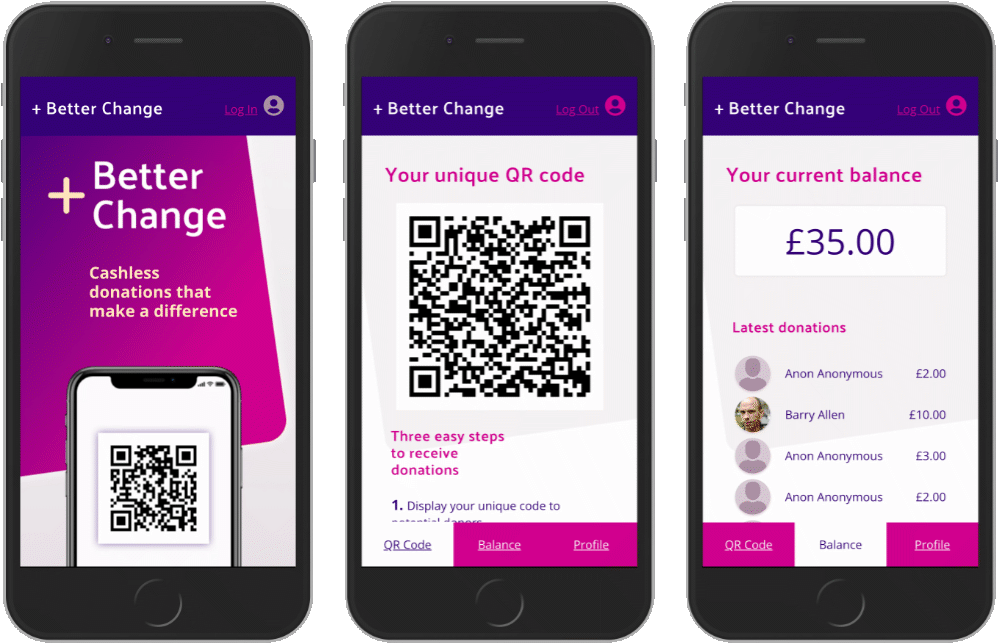

- Better Change (8-day group project). A web app that enables charity fundraisers to receive cashless and cardless donations.
- View live demo
- View Github Repo
- Technologies used: React, React Router, Redux, Node, Express, PostgreSQL, SCSS. I created the React components for S3 uploads, QR Code generation, form validation and designed the UI

PROFILE
Hi! My name is Roland. I am looking for a role as a Junior JavaScript Developer in which I can further my ability and passion for building robust and engaging websites and apps, and continue to develop and expand my skill set.
After 12 years of managing events and running digital & print design campaigns, I found myself increasingly drawn to web development. Recently I became curious about React, Node and other technologies so I decided to take a new direction and study on a 12-week JavaScript bootcamp at Constructor Labs. In a short space of time I learnt and demonstrated complex and sophisticated concepts through solo and group projects. Now I want to continue on this exciting new path and put what I have learnt into practice as a junior developer so I can expand my skill set and further my ability and passion for web development.
PROJECTS
- OurBnB (4-day group project) A web app that enables people to find and book accommodation at various locations.
- View live demo
- View Github Repo
- Technologies used: Technologies used include React, Node, Express, Handlebars, PostgreSQL, Grid, Flexbox. I set up the React architecture, search functionality, date-picker, SCSS and designed the UI
- Lovely Grubbly (2-day group project) A web app for ordering takeaway food for deliveries.
- View live demo
- View Github Repo
- Technologies used: React, Node, Express, PostgreSQL, SCSS, Flex-box
SKILLS

- Coding: Javascript, React, Redux, Node, Express, PostgreSQL, SCSS, Webpack, Jest / Enzyme, Agile, Git
- Production: Responsive Web Design, Figma, Photoshop, Indesign, Illustrator
- Other skills: Management, volunteer as a meditation teacher